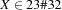
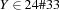

2.2 Constraint Propagation
Constraint propagation is an inference rule for finite domain problems that narrows the domains of variables. For instance, given the inequation

and the domain constraints

and

constraint propagation can narrow the domains of  and
and  to
to

and
